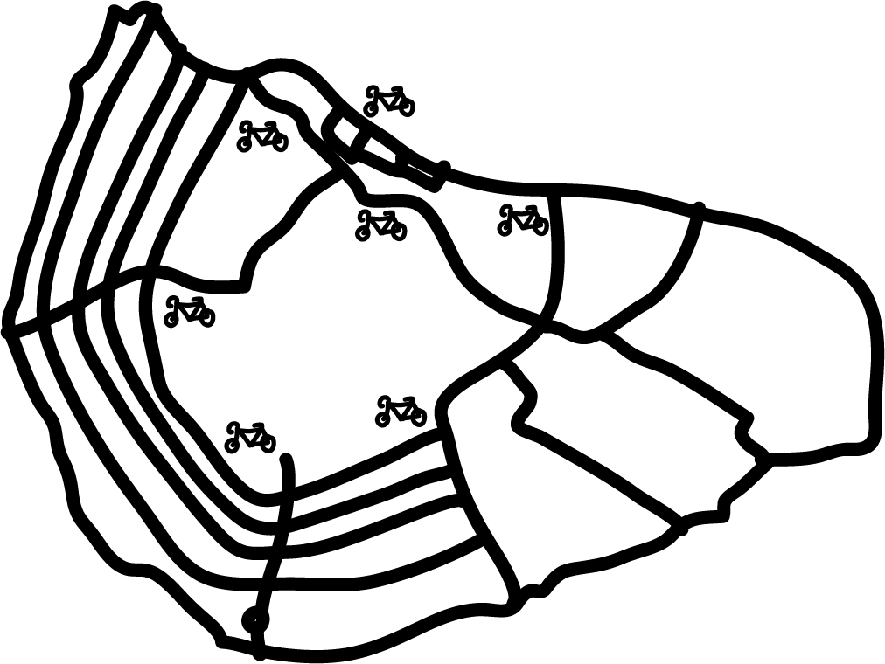
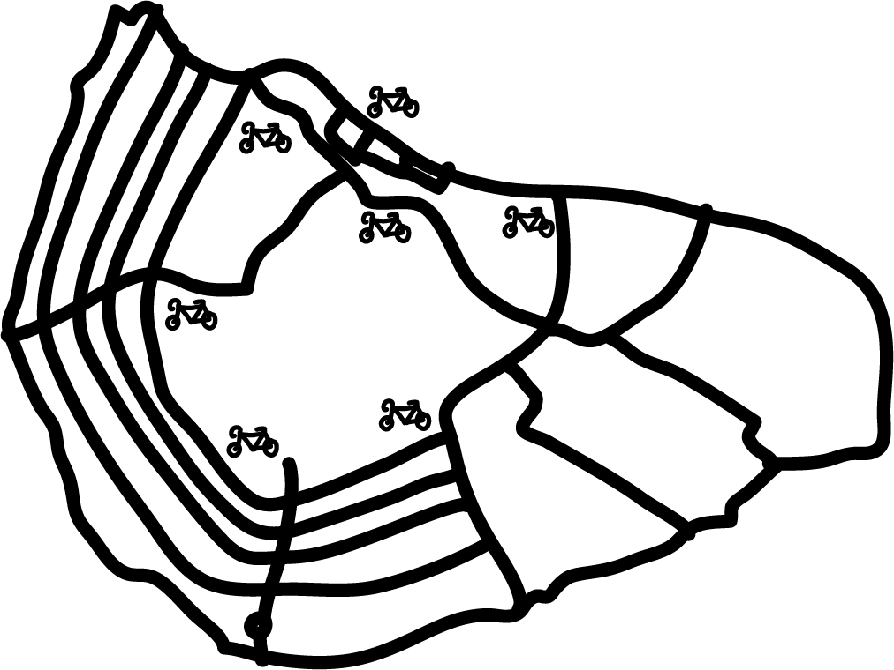

waar
maar waar in Amsterdam zijn dan precies deze fietsstallingen te vinden?
hieronder hebben we een kaartje voor jullie in elkaar gestoken om een beetje een beeld te geven!
maar waar in Amsterdam zijn dan precies deze fietsstallingen te vinden?
hieronder hebben we een kaartje voor jullie in elkaar gestoken om een beetje een beeld te geven!
